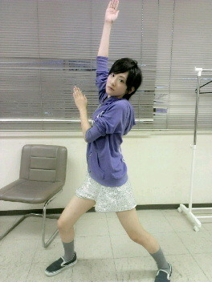

| 2012/08 21 Tue | 泣いたぜうがぁヽ( ・∀・)ノ |
今日は乃木坂結成一周年目の日。
乃木坂４６一歳のお誕生日おめでとう

そしてめざましライブに来てくださった皆さんありがとうございました！
ライブに関してはまだまだ学んでいますが、ライブってこんなに楽しくて、感動して、みんなとひとつになれるものなんだと感じました。
皆さんに会うと安心する！目が合うと照れちゃう(//∀//)
あとステージに出る前に今までの事を思い出して泣きそうになり...
結果泣いてしまった〜
だってね自分なりに頑張ってきた一年間。
乃木坂になって、メンバーに出会って、ふぁむの皆さんに出会って私は確実に変わることが出来ました。
明るく、前向きに、あと女の子らしくなったかな〜なんてね(笑)
いろんな思いがあふれでてくるよっ!!
キャー(／▽＼)♪
よしっ。
気持ちを切り替える!!
二年目に向けて、私は進み続ける。
坂を上り続ける。
自分に負けない。
自分らしくを大切に。
ネガティブになると思いますが、自分で切り替えられるように!!
でも時々皆さんのお世話になると思いますが
どうぞよろしくお願いいたします!!
うたた寝でもしようかな〜

椅子と私。
へばなっ!!
コメント(319)
2012/08/21 22:24